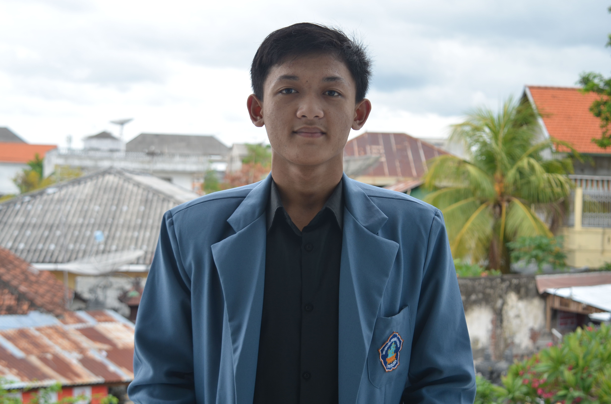

Founder & Software Engineer
Mahakarya Digital
Software Engineer sekaligus Founder dari Mahakarya Digital. Berfokus mendampingi bisnis dan instansi mengembangkan aplikasi web performa tinggi, infrastruktur backend yang andal, serta solusi cloud modern.
